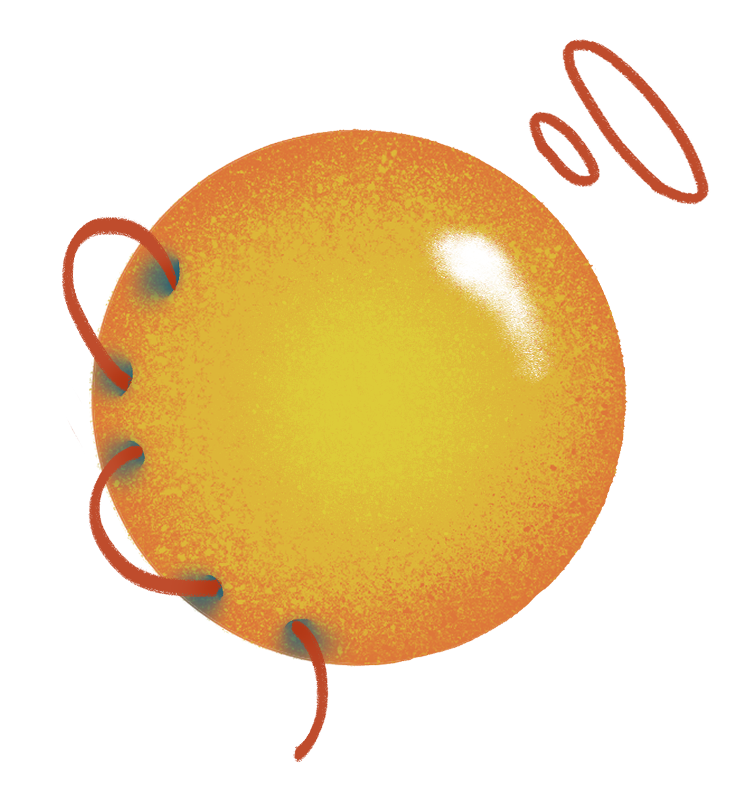

論 文 組
作 品 一 覽
01
物質親密與能見度在平台先環境中的實踐：以聲音創作專輯為例
02
香氛在現實規範與流行音樂文本中的衝突與意義建構
03
千禧世代創作者「奇軒」的自我呈現敘事策略與閱聽人接收分析

04
想按卻不敢按？內在焦慮與社會讚許衝突下的投讚猶豫，以及想像觀眾與自我監控之調節
05
從螢幕想像到現實臨場：
從螢幕想像到現實臨場：
臺灣Z世代數位造神收視經驗之探討

06
以ELM模型探討消費者如何解讀文創商品設計三層次
07
探討 AI 與節奏控制對認知負荷與調節效益—
探討 AI 與節奏控制對認知負荷與調節效益—
生理訊號與雙重任務在人機協作系統上之實證
08
Z世代客家電視YouTube節目之接收分析：